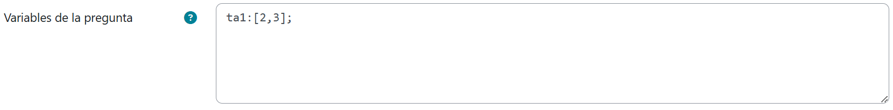
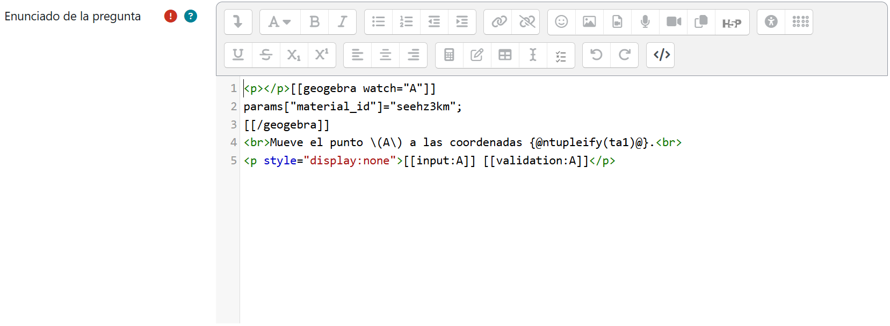
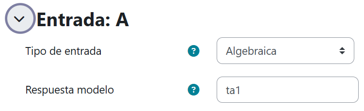
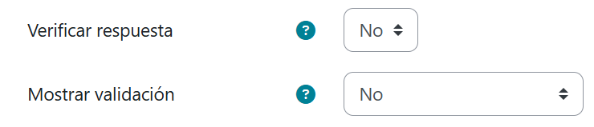
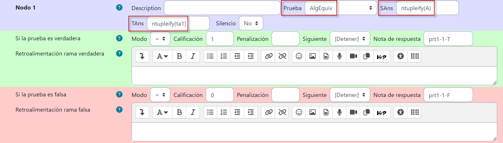
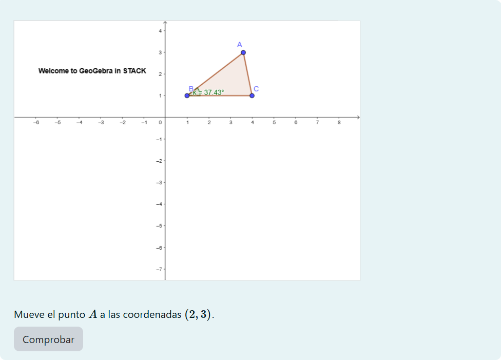

Monitoreo activo
Etiqueta watch
La etiqueta watch se usa para monitorear puntos y valores generados en una escena GeoGebra, de manera que éstos puedan asignarse a una entrada de STACK y usarse para la retroalimentación.
Retomemos la escena dinámica de Tim Lutz e imaginemos ahora que, en lugar de pedirle al usuario que introduzca las coordenadas del punto A, deseamos que mueva en la escena al punto A dadas las coordenadas \((2,3)\).
Crearemos pues una nueva pregunta y capturaremos el siguiente modelo de respuesta asignado a la variable ta1 en Variables de la pregunta:

Enseguida activaremos el editor HTML del Enunciado de la pregunta y generaremos un bloque GeoGebra similar al del ejemplo previo, solo que ahora en lugar de emplear en él la etiqueta set, utilizaremos watch. Adicionalmente, escribiremos las correspondientes instrucciones:

Debido a la naturaleza de la pregunta, en esta ocasión no tiene sentido conservar el campo de entrada de la respuesta ni presentar su validación sintáctica. Por esta razón, luego de haber activado el editor HTML del Enunciado de la pregunta, nos aseguraremos de que tanto el campo de entrada como la validación permanezan ocultos, mediante
<p style="display:none">[[input:A]] [[validation:A]]</p>
Adicionalmente, es importante señalar que en input y validation hemos capturado A en lugar de ans1, puesto que en este ejemplo el alumno no escribirá una respuesta sino se tomará como tal el par ordenado correspondiente a la ubicación del punto A en la escena.
Una vez guardados los cambios, especificaremos que el tipo de entrada es Algebraica y capturaremos la respuesta modelo desde Entrada: A:

Y seleccionaremos las siguientes opciones:

En el Nodo 1, haremos las siguientes selecciones y capturas. Notemos que, a diferencia del ejemplo previo, ans1 no aparece en ninguna de las capturas y que en su lugar aparece A, como es de esperarse:

Luego de guardar los cambios, el resultado es el siguiente y la pregunta STACK deberá funcionar correctamente:
